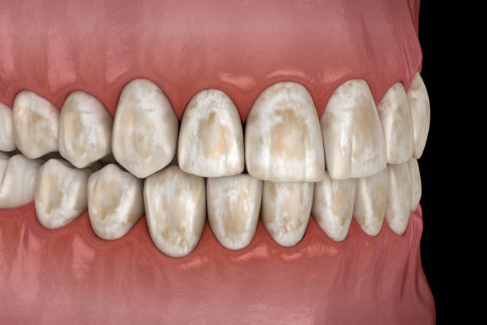
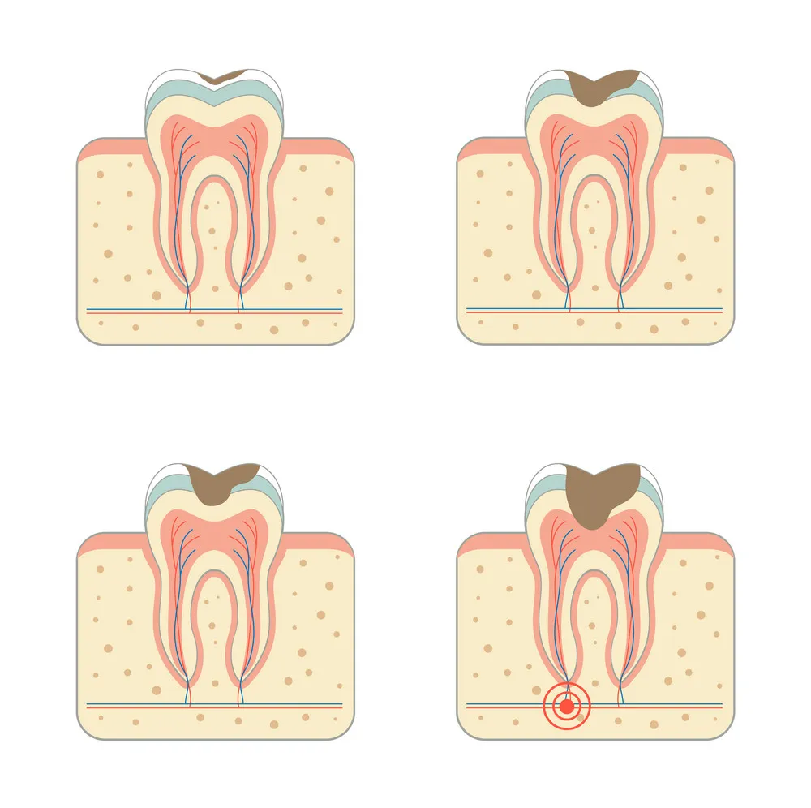
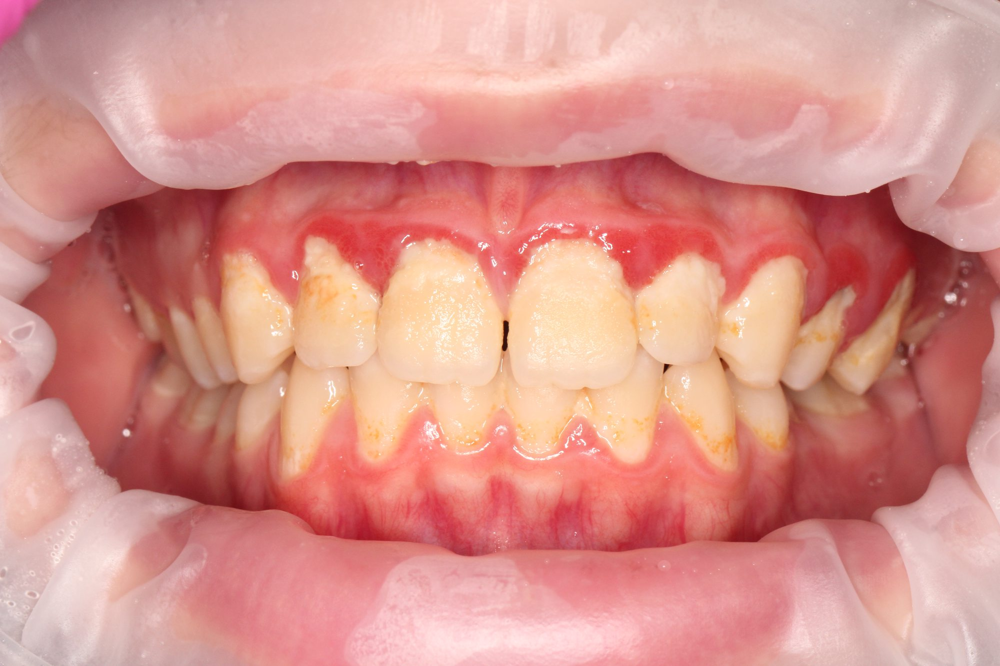

Гарна посмішка
це не тільки про зуби!
Здоров'я
Інфекція з ротової порожнини може потрапити в інші системи організму, підвищуючи ризик розвитку хронічних запальних процесів.
Серед них — запалення міокарду (міокардит), розвиток атеросклерозу, ускладнення перебігу цукрового діабету та навіть ревматоїдний артрит. Саме тому затягування лікування може мати незворотні наслідки для всього організму.


Карієс
На зубах утворюється біоплівка (наліт). Це складна колонія бактерій, які приклеюються до емалі. Просте полоскання рота водою цю плівку не змиває, її треба зчищати механічно (щіткою). Бактерії в цій плівці переробляють легкі вуглеводи. В результаті бродіння виділяються органічні кислоти.

У роті є кислотно-лужний баланс. Норма — це нейтральне середовище (pH близько 7). Коли ми їмо солодке, pH падає. Якщо pH падає нижче 5.5 — починається демінералізація.
Емаль — це кристали гідроксиапатиту (дуже тверда структура). При кислотній атаці з цих кристалів починають вимиватися кальцій і фосфор. Уявімо цегляну стіну, з якої кислота вимиває цемент. Цеглини (кристали) починають сипатися. Структура стає пористою.
Але хороша новина в тому, що це не "гра в одні ворота". Атака: Кислота вимиває мінерали. Захист: Слина повертає мінерали назад (ремінералізація). Карієс виникає тоді, коли процес втрати мінералів йде швидше, ніж процес їх відновлення.

Гінгівіт
Гінгівіт — це запальна імунна відповідь на мікробну біоплівку, під час якої організм ініціює (розширення судин) та набряк слизової оболонки, намагаючись транспортувати лейкоцити(клітини запалення) до вогнища інфекції.
Стінки судин через запалення стають дуже тонкими й натягнутими. Найменший дотик — і ця переповнена кров'ю «губка» віддає вміст. Кров — це ознака боротьби імунітету, а не слабкості ясен.
Якщо ти перестаєш чистити болюче місце -> наліт накопичується ще більше -> бактерії атакують сильніше -> запалення зростає. Правило: Кровить? Чисти ретельніше (але м'якою щіткою), щоб прибрати джерело інфекції.